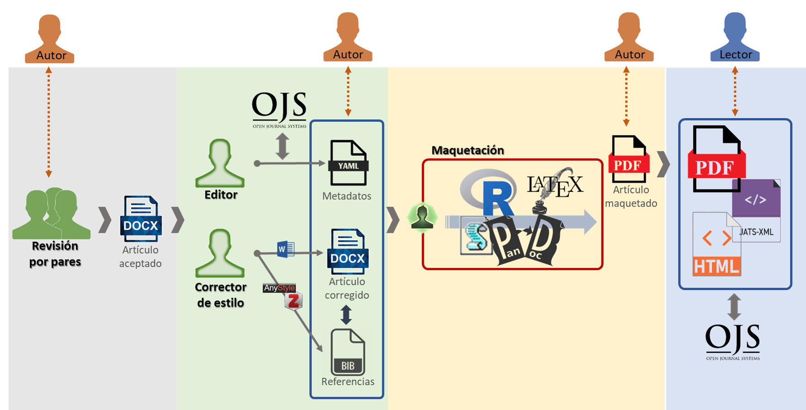
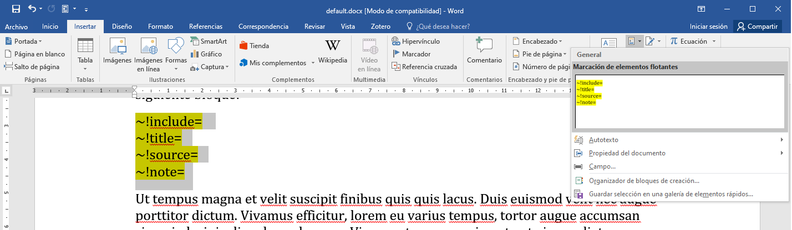

Uso de ~!gurí_
Esta es una versión preliminar y en proceso de construcción. Muchos aspectos pueden cambiar drásticamente (incluso en sólo un par de días). Tenga presente este aspecto y revise siempre la que esté trabajando con última versión antes de iniciar esta etapa del trabajo editorial.
La propuesta de
Es importante considerar que la propuesta editorial tiene como base diferenciar los tres grandes bloques que componen un artículo científico (ver estandar XML-JATS), a saber:
- Metadatos (front): contiene información de identificación sobre la revista, los autores y el propio artículo;
- Cuerpo principal del manuscrito (body): contiene el contenido principal del texto, incluidos los elementos flotantes como tablas y figuras; y
- Material complementario (back): contiene elementos que complementan el cuerpo principal, incluyendo principalmente las referencias bibliográficas y anexos.
En este sentido, una de las tareas principales de esta etapa es generar los documento necesarios para la etapa siguiente (maquetación), diferenciando estos tres grandes bloques. Este proceso deberá llevarse adelante en conjunto entre un Corrector de estilo y un Editor. Como insumo los encargados de esta etapa recibirán el manuscrito aceptado (.DOCX) en el proceso de revisión por pares, a partir del cual se deberá diferenciar estos tres grandes bloques (front, body y back) para que puedan ser utilizados en la etapa posterior de generación de archivos finales o maquetación (ver Figura 1).
[TODO] Actualizar figura con esquema para incorporar CRediT y elementos flotantes

Las tareas específicas del Editor durante esta etapa serán:
- Generar un archivo (
YAML) con los metadatos de los autores, el artículo y el volumen/número al que corresponde el dicho artículo (ver sección Metadatos). - Incorporar un archivo (
XLSX) enviado por el/los autores con la información de acreditación según la taxonomía CRediT (ver sección Metadatos). - Garantizar que dichos metadatos queden correctamente representados en el sistema de gestión de revistas (Open Journal System - OJS o el gestor de portales de revistas utilizado).
- Coordinar el proceso general de la etapa de corrección de pruebas, garantizando la correcta organización de los archivos finales (ver sección Organización de carpetas de trabajo).
- Mediar en el intercambio con el resto del equipo editorial, en particular con los encargados de la comunicación con los autores para poder validar los documentos resultantes de este proceso antes de que pasen a la etapa siguiente.
Las tarea del Corrector de estilo serán:
- Hacer una marcación y diferenciación de los diferentes bloques de contenidos, como títulos, texto, citas, etc. (ver sección Formato de documento).
- Hacer una lectura general del artículo, corrigiendo problemas de redacción, gramaticales u ortografía (ver sección Corrección de contenido).
- Verificar el formato y la correcta inclusión de las Tablas y Figuras para que puedan ser incorporadas correctamente en la etapa siguiente (ver sección Elementos flotantes). Esto incluye marcar las referencias cruzadas internas a dichos elementos.
- Identificar y marcar las referencias bibliográficas mediante el uso de un gestor de referencias (ver sección Referencias bibliográficas).
Si bien por una cuestión de lógica de los artículos la sección referida a las Referencias bibliográficas se encuentra al final de este documento, es recomendable que el Corrector de pruebas realice esta tarea en primer lugar. Esto se debe a que para poder realizar la gestión de las referencias deberá tener previamente cargadas las referencias. En este sentido, en términos prácticos se recomienda empezar por la carga de las referencias en Zotero. Más allá de esto, el resto de las tareas (incluida la identificación de citas en el texto) se desarrollan de forma casi paralela dependiendo del orden en que los elementos aparezcan en el manuscrito, por lo cual, no existe un ‘orden de trabajo’.
Organización de carpetas de trabajo
Para cada número se creará una carpeta independiente que contendrá un archivo _issue.yaml con la información básica del número. Dentro de esta carpeta se deberá generar una carpeta independiente para cada artículo. Las carpetas de cada artículo deben utilizar una estructura de prefijos común, de manera que empiecen por la sílaba ‘art’, seguida de un identificador de un dígito para la sección y dos dígitos que identifiquen a los artículos en un orden secuencial que se espera sean presentados (ver recuadro con ejemplo). En caso de que la revista no tenga sección podrá usar una numeración continuada con tres dígitos.
En la revista Quid16 las secciones disponibles y sus respectivos números de referencia son:
- Editorial;
- Presentación de dossier o número especial;
- Artículos del dossier;
- Artículos de sección abierta;
- Urbanidades;
- Novedades;
- Avisos editoriales.
De esta manera, suponiendo que nuestro artículo pertenezca al Dossier (3) y sea el segundo en orden dentro de esta sección (02), el nombre de la carpeta sería art302.
Dentro de cada carpeta de artículo es obligatorio que haya los siguientes archivos:
art[~].yaml(ejemplo:art302.yaml): Contiene los metadatos del artículo (autores, el título, el resumen, etc).art[~].docx(ejemplo:art302.docx): Contiene el manuscrito corregido, con las referencias identificadas mediante gestor de referencia (si las hubiere).
Además de estos archivos es posible encontrar uno o más de los siguientes archivos opcionales:
art[~]_credit.xlsx(ejemplo:art302_credit.yaml): Contiene una tabla con la información sobre la taxonomía CRediT, referida a las contribuciones de los autores individuales.art[~]_app[~].docx(ejemplo:art302_app01.docx): Contiene los anexos vinculados al manuscrito. Es posible que exista uno o más archivos de este tipo (dependiendo de la cantidad de anexos). Debería estar presente sólo si existen anexos en el manuscrito.art[~]_notes.md(ejemplo:art302_notes.md): En este archivo se podrá incluir cualquier tipo de observación o comentario que se considere pertinente comunicar. El archivo está en formato Markdown, por lo que se recomienda el uso de los marcadores asociados a este lenguaje de marcación (ver Tutorial de Markdown y Editor online). Recuerde que este archivo es simplemente un archivo de texto plano (por ejemplo un.txt) con una extención.md. Sólo puede haber un archivo de este tipo por artículo. El archivo sólo estará presente si hay comentarios durante el proceso de corrección de pruebas.
Además de estos archivos, dentro de cada carpeta de artículo podrá haber una carpeta ./float con varios archivos en donde estarán las Tablas y Figuras (ver sección Elementos flotantes para mayor desarrollo).
Para ilustrar la organización de archivos prevista, si el artículo que se está corrigiendo corresponde al Número 20 de la revista, entonces la carpeta del segundo artículo de la sección “3” (./art302) deberá tener la estructura de archivos que se presenta en la Figura 2.

Metadatos
Información del volumen/número y el artículo
[TODO] El archivo
issue.yaml.[TODO] Desarrollar la descripción de los elementos a completar en
art[~].yaml.
Para la identifiación de los metadatos del número y el artículo se utilizará como modelo el documento _issue.yaml y _article.yaml, respectivamente (ver carpeta ./default-files).
La instalación y configuración general se explica en el Anexo 1
Taxonomía CRediT
Si la revista utiliza la taxonomía CRediT para identificar la contribución de los autores, entonces deberá proporcioanrse para cada artículo un archivo art[~]_credit.xlsx. Este archivo, deberá tener una primera columna (‘CREDIT’) con los catorces roles identificados por esta taxonomía1 y una columna para cada autor (vea el modelo disponible en la carpeta ./default-files). Para indicar la contribución de cada autor deberá agregar una ‘x’ (equis minúscula). Es importante que esta tabla no contenga columnas que no referencien a los autores (no deje las columnas de la plantilla en blanco). Por el momento, no es posible utilizar una escala de contribución para cada uno de los roles. Tenga en cuenta que autor puede haber contribuido en más de uno de los roles. El programa no corrobora si las contribuciones atribuidas a cada autor se consideran sustanciales y suficientes para generar atribución de autoría.
Formato de documento
El texto debe formatearse utilizando como base el documento default.docx (ver carpeta ./default-files). Para ello, se debe pegar los fragmentos del texto del manuscrito original en esta plantilla y utilizar los ‘estilos’ definidos en la misma.
Es muy importante usar la plantilla o template default.docx como documento base para el proceso, ya que todo el proceso posterior depende del modo en que están configurados los estilos en este archivo.
Deberá identificar cada uno de los ‘tipos de bloques de texto’ con un estilo de la plantilla. Para ello se deben utilizar sólo los siguientes estilos (entre paréntesis para los casos en que se utilice la versión en inglés):
- ‘
Título’ (o ‘Title’): Se coloca sólo el título principal del artículo. - ‘
SubTítulo’ (o ‘Subitle’): Se coloca sólo el subtítulo principal del artículo. - ‘
Título 1’ (o ‘Heading 1’): Se colocan los títulos de nivel 1 (sin incluir numeración). - ‘
Título 2’ (o ‘Heading 2’): Se colocan los títulos de nivel 2 (sin incluir numeración). - ‘
Título 3’ (o ‘Heading 3’): Se colocan los títulos de nivel 3 (sin incluir numeración). - ‘
Texto independiente’ (o ‘Body text’): Incluye todos los bloques de texto que corresponden a los bloques de párrafo del cuerpo normal. - ‘
Texto de bloque’ (o ‘Block text’): Se colocan las citas largas así como los resaltados de entrevistas.
En caso de que encuentre bloques o fragmentos con líneas de código informático deberá usar el estilo de carácter ‘SourceCode’ (no utilice el bloque de ‘Cita’ o ‘Blockquote’). Por su parte, para la inclusión de fórmulas matemáticas utilice el editor de fórmulas incorporado en Microsoft Word con el estilo de ‘Texto independiente’.
En caso de que encuentre otro tipo de bloque de texto que no sea posible etiquetar con estos estilos, deberá dejarlo asentado en el documento para notas asociado al artículo (art[~]_notas.md) y resaltarlo con color en el archivo .docx del manuscrito. De todas formas, considere que estos bloques deberían cubrir la mayor parte de las situaciones comunes.
Los datos de los autores, el resumen y las palabras claves no deben estar presentes en el documento art[~].docx, por lo cual deberán ser borrados del mismo (son incluidos en los metadatos). Por su parte, los elementos flotantes (tablas y figuras) tienen un tratamiento especial (ver sección Elementos flotantes).
Corrección de contenido
Deberá realizar una corrección general de la escritura para detectar inconsistencias gramaticales, errores tipográficos u otros problemas asociados a la escritura. No existen pautas únicas para realizar esta tarea, por lo cual cada revista seguirá sus propios criterios.
Elementos flotantes
Dentro de la corrección de estilo será necesario marcar los elementos flotantes (Tablas y Figuras) que aparezcan en el manuscrito. Las tablas y figuras serán guardadas externamente en una carpeta denominada ‘float’ dentro del directorio del artículo. Para facilitar la explicación diferenciamos
Guardar archivos externamente
Para las figuras esto se puede hacer dentro de Microsoft Word presionando el botón derecho en la figura y eligiendo ‘Guardar como imagen’, lo que abrirá un cuadro de diálogo para guardar la misma (el formato del archivo podrá ser el que sugiere por defecto).2 Por su parte, para las tablas las mismas deberán ser copiadas y pegadas en una planilla de cálculo de Microsoft Excel. En ambos casos los archivos deberán guardarse en la carpeta float/ dentro de la carpeta de cada artículo. Los nombres de los archivos deberán ser FIG_XX o TAB_XX (dependiendo de si se trata de Figuras o Tablas) y reemplazando ‘XX’ por el número de tabla o figura (ver ejemplo en Figura 2). Además, como se mencionó en la sección de Corrección de contenido es importante usar dos dígitos para la numeración de estos elementos flotantes.
Marcación de elementos flotantes
Dentro del manuscrito deberá reemplazar las figuras y tablas por un marcador. El marcador deberá incluir obligatoriamente información sobre:
- El nombre de la etiqueta utilizada para marcar el elemento. Debe ser igual al nombre del archivo (sin extensión) que contiene el elemento dentro del directorio
float/(ver apartado anterior); y - El título del elemento que se presentará debajo del elemento para las figuras y sobre el elemento para las tablas.
Además, se podrá incluir opcionalmente3 información sobre:
- La autoría y la fuente de información con la cual se elaboró el elemento (Ejemplo: ‘Elaboración propia en base a datos de INDEC.’). Si estuviera presente, este elemento irá precedido del texto ‘Fuente:’;
- Otras notas adicionales que aclaren aspectos del elemento. Se recomienda hacer un uso excepcional de este campo, siendo preferible incorporar la información dentro del título o como notas internas del propio elemento. Si estuviera presente, este elemento irá precedido del texto ‘Nota:’.
La marcación de los elementos flotantes se deberá realizar en párrafo propio (con estilo ‘Texto independiente’). Para identificar los elementos se utiliza una estructura ‘clave=valor’ (key=value), en la que cada clave comienza por el símbolo de virgulilla (~)4 y un signo de admiración de cierre (‘!’). La ‘clave’ deberá estar separada del ‘valor’ por un signo igual (‘=’) sin espacio entre ambos. Los pares clave-valor estarán separados entre sí por un espacio simple. Todos los marcadores de elementos flotantes deben respetar un orden de elementos prefijado, tal como es presentada en la Tabla 1: ~!include -> ~!title -> ~!source -> ~!notes. Los marcadores deben tener al menos los campo ~!include y ~!title, siendo opcionales los otros campos (es posible dejar vacío el value si el campo no está presente). Es importante que si no se brinda alguno de los valores opcionales se genere un valor vacío para la clave omitida (ejemplo de figura con campo ‘note’ pero sin campo ‘source’: '~!include=FIG_01 ~!=title=Este es el título ~!source= ~!note=Una nota').
| Clave=Valor | Descripción de value |
Obligatorio | Ejemplo |
|---|---|---|---|
~!include=value |
Etiqueta utilizada para el marcado y nombre del archivo (sin extensión). | x | ~!include=FIG_01 |
~!title=value |
Título de la figura o la tabla. Recuerde incluir un punto final si es necesario al final de la oración. | x | ~!title=Título de figura. |
~!source=value |
Fuente de donde es extraída la figura o tabla. En caso de ser de elaboración propia deberá consignarse aquí. | ~!source=Elaboración propia en base a INDEC. |
|
~!note=value |
Notas asociadas al elemento. Se recomienda hacer un uso excepcional de este campo, siendo preferible incorporar la información dentro del título o como notas internas del propio elemento. | ~!note=Esta es una nota del elemento. |
Los marcadores deben utilizar un sólo párrafo. Sin embargo, es posible separar los elementos clave-valor mediante el uso de saltos de líneas ‘débiles’ (shift + enter), como se muestra en la FIG_01 del ejemplo de marcación de la Figura 3. También es posible (pero no necesario) resaltar estos elementos para facilitar su ubicación durante la tarea de corrección.

Para facilitar la marcación, es posible configurar Microsoft Word para generar automáticamente un ‘bloque de texto’ con la estructura necesaria para la marcación. Para ello debe copiar como texto sin formato el siguiente bloque de texto en la plantilla modelo sobre la que realizará la corrección (puede utilizar el bloque coloreado que está presente al final de la plantilla modelo).
~!include= ~!title= ~!source= ~!note=Luego seleccione este contenido y dentro de la pestaña ‘Insertar’ busque el botón ‘Elementos rápidos’ y seleccione la opción ‘Guardar selección en una galería de elementos rápidos’. Dentro de la ventana emergente puede seleccionar un nombre y una descripción para el bloque (es recomendable usar un nombre que pueda recordar, como ‘Bloque de elemento flotante’ o ‘Marcación de elemento flotante’). Además, dentro de este cuadro de diálogo, seleccione dentro de ‘Opciones’ el texto ‘Insertar como contenido en su propio párrafo’ y presione ‘Aceptar’.
Luego de esto, podrá insertar automáticamente el bloque de marcación seleccionándolo dentro de las opciones que aparecen en el botón ‘Elementos rápidos’ del menú ‘Insertar’ (ver Figura 4). Si requiere modificar o eliminar el bloque de contenido que generó, puede elegir la opción ‘Organización de bloques de creación…’ (dentro del botón ‘Elementos rápidos’ del menú ‘Insertar’). Cuando guarde el archivo se le consultará para guardar los cambios hechos en los ‘estilos’ o ‘bloques de creación’ (debe guardar estos cambios).

Además, es posible asignar un atajo de teclado para poder insertar este bloque de marcación. Para ello vaya a la pestaña ‘Archivo’ y selecciones ‘Opciones’. En la ventana emergente seleccione la pestaña ‘Personalizar cinta de opciones’ y debajo del cuadro de la izquierda seleccione ‘Personalizar…’ (al lado de donde dice ‘Métodos abreviados de teclado’). En el nuevo cuadro de diálogo seleccione la Categoría ‘Bloques de creación’, que estará cerca del final de toda la lista de categorías, y luego en el cuadro de la derecha seleccione el nombre del bloque de marcación por el nombre que le dio cuando lo creo. Por último seleccione una combinación de teclas de su preferencia (una opción recomendada es Ctr + Alt + m) y presione ‘Asignar’.
Referencias cruzadas a elementos flotantes
Se deberán marcar dentro del texto todas las referencias a elementos flotantes. Para esto se reemplazará cada referencia cruzada a tablas o figuras por <!TAB_XX> o <!FIG_XX> según corresponda, reemplazando ‘XX’ por el número de tabla o figura (es importante usar dos dígitos para esta numeración).
Si el texto original fuera:
Como se muestra en la Figura 1, tal cosa […] Mientras que en la Tabla 2 señalamos que pasa otra cosa.
Debería reemplazarse por:
Como se muestra en la <!FIG_01>, tal cosa […] Mientras que en la <!TAB_02> señalamos que pasa otra cosa.
Referencias bibliográficas
Obtener referencias
El primer paso consiste en copiar las referencias ubicadas al final del manuscrito original y pegarlas en el primer recuadro que aparece en la página anystile. Luego presione el botón rojo que dice ‘Parse [X] references’ y, a continuación, descargue el archivo en formato Bibtex. Esto descargará un archivo en formato .bib. Es recomendable que en este momento modifique el nombre del archivo descargado identifique al artículo que está corrigiendo (por ejemplo, si está corrigiendo el ‘artículo 304’ del dossier para el ‘número 25’ de la revista ‘Quid16’, podría usar como nombre de archivo: QUID16_N25_304.bib).
Corregir referencias
Luego deberá abrir Zotero e importe el archivo generado en el paso anterior. Para ello vaya al menú Archivo -> Importar... y en la primera ventana emergente seleccione ‘Un archivo (Bibtex, Ris, Zotero RDF, etc)’, luego elija el archivo que descargó anteriormente de anystile y en la última ventana emergente asegúrese de que está marcada la casilla ‘Coloca colecciones y elementos importados en una nueva colección’. En el lado izquierdo debería ver que se generó una ‘colección’ con el nombre del archivo que descargó (si no modificó anteriormente el nombre del archivo, puede modificar ahora el nombre de la colección para que sea más fácil identificarla). Dentro de esta colección deberá hacer una revisión de cada una de las referencias para verificar la correcta identificación de los campos.
Identificar referencias
Manteniendo Zotero abierto deberá integrar todas las referencias presentes en el texto manuscrito dentro de Microsoft Word. En caso de que alguna referencia no esté presente en el listado enviado por los autores (y por lo tanto en su lista de referencias dentro de Zotero), deberá marcarlas con un color resaltado dentro del texto y comunicárselo a los editores responsables para que puedan consultar al autor de manera que este pueda brindar dicha referencia (o la misma sea eliminada). Una vez que el autor haya enviado las referencias faltantes estas deberán ser incluidas dentro de Zotero (en la colección correspondiente a dicho artículo) y agregadas al manuscrito en Microsoft Word mediante el procedimiento anterior. No debe preocuparse por las referencias listadas por el autor que no fueron utilizadas en el texto, ya que las mismas serán descartadas por defecto.
Al finalizar el texto deberá colocar un título de nivel 1 que diga ‘Referencias bibliográficas’ y a continuación el listado de referencias (como es generado por el botón ‘Add/Edit Bibliography’ de la aplicación de Zotero para Word).
Exportar archivo .json con referencias
Por último, con el listado completo de referencias utilizadas en el artículo (dentro de una colección indenpendiente en Zotero), deberá generar una exportación del archivo JSON final. Es importante realizar esta tarea luego de realizar la verificación de referencias en el manuscrito para evitar que haya referencias que no estén listadas en el listado de referencias original entregada por el autor. Para ello, dentro de Zotero debe seleccionar la colección donde están las referencias utilizadas en el artículo y presionar botón derecho. En el menú desplegable seleccione ‘Exportar colección’ y dentro de las opciones de formato seleccione ‘CSL JSON’ y presione ‘OK’ para seleccionar el nombre del archivo donde se exportará su colección. Este archivo deberá llamarse art[~]_biblio.json y es uno de los archivos que debe colocar en la carpeta de trabajo del artículo (ver sección Organización de carpetas).
Para el caso de los artículos que tengan referencias bibliográficas, estas deberán ser manejadas mediante el uso del gestor de referencias de código abierto Zotero (no es posible utilizar otro gestor de referencia como Mendeley o EndNote). Para ello es necesario descargar el programa y crearse una cuenta en la página oficial. Además, deberá verificar que tenga instalado el complemento de Zotero para Word. Para saber si está instalado este complemento abra Microsoft Word y verifique que aparezca una pestaña que diga ‘Zotero’. En caso contrario instale el complemento de Zotero para Word.
Además, es necesario instalar el complemento Better Bibtex para Zotero. Para ello vayan a la página de instalación del proyecto y utilicen el link que los lleva al último lanzamiento (‘latest release’). Esto les abrirá una ventana en la que habrá tres archivos. Deben descargar el que finaliza con la extensión xpi. Una vez descargado vayan a Zotero y elijan la pestaña ‘Herramientas’ -> ‘Complementos’. En la ventana emergente elijan la rueda/engranaje que está arriba a la derecha y seleccionen ‘Install Add-on Form File…’, lo cual les abrirá una ventana de diálogo para que seleccionen el archivo que bajaron anteriormente. Una vez instalado el complemento es posible que deba reiniciar Zotero, luego vaya a la pestaña ‘Herramientas’ -> ‘BetterBibTeX’ (debería aparecer luego de reiniciar) y seleccione la opción ‘Open Better BibTeX preferences…’. En la ventana emergente deberá cambiar la ‘Citation key formula’ por una de su gusto (recomiendo auth.capitalize + year que genera claves de la forma ‘AutorAÑO’). En el resto de las opciones de esta pestaña deberá asegurarse de que donde dice ‘Keep keys unique’ aparezca seleccionada la opción ‘across all libraries’; y donde dice ‘On conflict with a pinned keym non-pinned keys will be’ debe seleccionar ‘postfixed (causes key changes)’. El resto de las opciones puede configurarlas según sus preferencias.
Además, es posible (y recomendable) personalizar los atajos de teclado de Microsoft Word para generar un comando rápido de teclado para agregar/editar las citas. Para ello, dentro de Microsoft Word vaya a Archivo -> Opciones (en la parte inferior izquierda). Esto abrirá una ventana emergente, donde deberá seleccionar la pestaña ‘Personalizar cinta de opciones’ y luego presionar el botón de ‘Personalizar…’ los ‘Métodos abreviados de teclado’ (debajo de la primera caja de íconos). Se abrirá un nuevo cuadro de diálogo y deberá seleccionar la Categoría ‘Macros’ y, dentro de las opciones de la derecha, seleccionar ‘ZoteroAddEditCitation’. Luego donde dice ‘Nueva tecla de método abreviado’ deberá elegir el atajo que desea agregar. Como sugerencia se recomienda configurar este atajo como Alt + z.
Tratamiento de anexos
[TODO] Definir tratamiento de anexos (
art[~]_app[~].docx).[TODO] Escribir instructivo sobre anexos.
Notas
Es importante respetar el siguiente orden de las filas con los roles:
(1) Conceptualization; (2) Data curation; (3) Formal Analysis; (4) Funding acquisition; (5) Investigation; (6) Methodology; (7) Project administration; (8) Resources; (9) Software; (10) Supervision; (11) Validation; (12) Visualization; (13) Writing – original draft; (14) Writing – review & editing.
Es posible modificar el texto que aparece en la columna ‘CREDIT’ y, de hecho, es recomendable que lo haga para que esta se adapte al idioma de su revista. El texto que figura en esta columna será utilizado para indicar la taxonomía en los formatos de salida.↩︎
Las figuras podrán tener cualquiera de los formatos válidos para figuras, como ser:
.png,.jpgo.jpeg.↩︎Los dos contenidos opcionales irán debajo del elemento en la versión de publicación.↩︎
Para hacer el signo de virgulilla puede presionar simultáneamente
Alt gr+4o bienAlt+126.↩︎